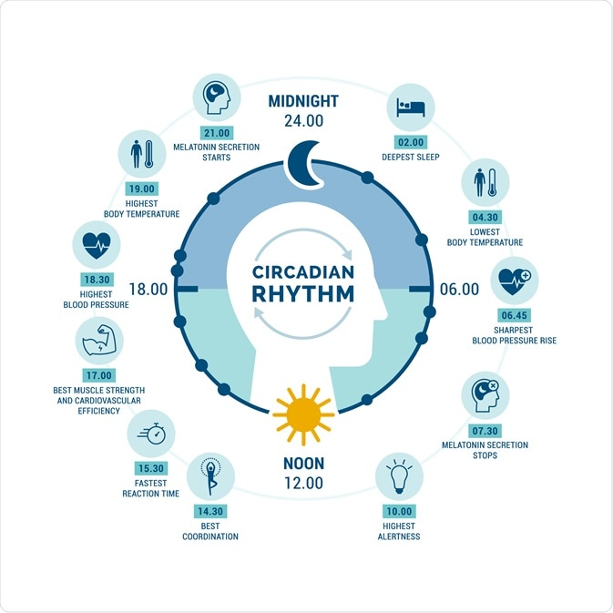

Circadian Rhythm vs. Sleep Homeostasis: The Two Forces Fighting Inside You

For years, I thought "just go to bed when you're tired" was good advice. It's not.
I said that to clients all the time. "Listen to your body." "Sleep when you feel sleepy." It sounds so wise, right? Like something a yoga instructor would say while holding a crystal. But here's the problem: your body sends two different signals, and they fight each other. One says "go to sleep now." The other says "wait, it's not time yet." And if you don't know which one is winning, you'll just lie there staring at the ceiling wondering why you're not tired at 11 PM but you're exhausted at 2 PM.
I learned this the hard way. Around 2015, I was working insane hours — finishing my postdoc, teaching a class, and helping my husband renovate our kitchen because we made the terrible decision to buy a fixer-upper. I would crash at 9 PM, fall asleep on the couch, wake up at 11 PM, drag myself to bed, and then lie awake until 2 AM. Then I'd sleep until 6 AM and feel like garbage. I kept asking myself: "Why am I tired at 9 PM but not at 11 PM? That makes no sense."
It makes perfect sense. I just didn't understand the two forces.
Sleep homeostasis is simple. The longer you've been awake, the more you want to sleep. It builds up like hunger. If you wake up at 7 AM, by 9 PM you've been awake for fourteen hours, so your sleep pressure is high. That's why you feel sleepy at 9 PM. But here's the catch: sleep pressure doesn't care what time it is. It just keeps building. If you ignore it, it doesn't go away. It just waits.
Your circadian rhythm is different. It's a twenty-four-hour cycle that tells your body when to be alert and when to wind down. It's controlled by light, mostly. In the morning, light tells your brain to release cortisol — the wake-up hormone. In the evening, darkness tells your brain to release melatonin — the sleep hormone. Your circadian rhythm has a natural dip in the afternoon — that 2 PM crash — and another dip late at night. It also has a "forbidden zone" for sleep in the early evening — a time when your brain actively fights sleep, no matter how tired you are.
So here's what was happening to me in 2015. At 9 PM, my sleep pressure was high — I'd been awake since 6 AM — so I felt tired. I fell asleep on the couch. But my circadian rhythm wasn't ready for sleep yet — because my body was still on a schedule that expected me to be awake until 11 PM. So when I woke up at 11 PM, my sleep pressure had dropped a little because I had napped, and my circadian rhythm was now in its "alert" phase. Result: wide awake at midnight. Then around 2 AM, my circadian rhythm finally switched to "sleep mode," but by then I was too anxious about not sleeping to actually fall asleep.
It's like two people fighting over a steering wheel. Sleep homeostasis is pushing the gas. Circadian rhythm is yanking the wheel left and right. You don't go anywhere.
I was wrong about "just go to bed when you're tired." Because if you go to bed during your circadian "forbidden zone," you won't sleep. You'll just lie there getting more and more frustrated. What you actually need to do is align your bedtime with your circadian rhythm, not with your sleep pressure. Sleep pressure will take care of itself if you let it.
Here's an analogy I use with clients. Imagine you're at an airport. Sleep pressure is how long you've been waiting for your flight. The longer you wait, the more you want to board. Circadian rhythm is the departure time. You can't board before the departure time, no matter how long you've been waiting. If you try, the gate agent will say "sorry, the plane isn't here yet." That's what happens when you go to bed at 9 PM but your circadian rhythm says "not until 11 PM." You're at the gate, but the plane hasn't arrived.
So how do you fix it? You need to find your natural circadian bedtime. Not the time you think you should go to bed. Not the time your spouse goes to bed. The time your body actually wants to sleep.
The bedtime finder asks you a few simple questions: what time did you go to bed, what time did you wake up, and how did you feel in the morning? It doesn't need a week of data. It just needs one honest answer. Then it tells you whether to shift your bedtime earlier or later. I've had clients use it for three nights in a row and land on their perfect bedtime within a week.
But here's the thing that surprises people: most people's natural bedtime is later than they think. Especially if you've been fighting your circadian rhythm for years. A guy named Tom swore he was a "morning person" but couldn't fall asleep before 1 AM. He tried everything — melatonin, no screens, warm milk. Nothing worked. I had him use the bedtime finder for five nights. It told him to go to bed at 12:30 AM, not 10:30 PM. He was shocked. "That's too late," he said. "I have to wake up at 7 AM." I said try it for a week. He did. He fell asleep in fifteen minutes instead of two hours. He woke up feeling better on six and a half hours of sleep than he had on eight hours of forced sleep. Because six and a half aligned with his circadian rhythm, and eight did not.
Now, sleep homeostasis is still important. If you have high sleep pressure — you've been awake for a long time — you can sometimes fall asleep even during your circadian forbidden zone. That's why shift workers can sleep during the day — their sleep pressure is so high that it overrides their circadian rhythm. But that's not healthy long-term. It's like forcing your car to run on the wrong fuel. It'll work for a while, but eventually something breaks.
The ideal situation is when both systems agree. That's called "circadian alignment." You go to bed when your circadian rhythm says "sleep time" and your sleep pressure is high. You wake up naturally when your circadian rhythm says "wake time" and your sleep pressure is low. That's how people without alarm clocks sleep. They're not magic. They just have alignment.
I didn't have alignment for most of my twenties and early thirties. I was a night owl forced into a morning person schedule because of work. Then I had a kid, which destroyed whatever schedule I had left. It wasn't until I actually measured my sleep quality that I saw how bad things were.
The first time I took that quiz, I scored a 41. That's not just bad. That's "see a doctor" bad. The quiz told me my biggest problem was circadian misalignment — my bedtime and my natural rhythm were off by about one and a half hours. I didn't believe it at first. I thought I was just a bad sleeper. But I tried shifting my bedtime by fifteen minutes every few days, using the bedtime finder to guide me. Within three weeks, I found my sweet spot: 10:45 PM. Not 10:30. Not 11:00. 10:45. That's when my body actually wanted to sleep.
Now I can feel it. At 10:30, I'm not tired yet. At 10:45, a wave of sleepiness hits. If I go to bed then, I fall asleep in under ten minutes. If I wait until 11:00, I've missed the wave and I'll lie awake for thirty minutes. That's how precise your circadian rhythm is. It's not a vague feeling. It's a biological schedule.
A woman named Jenna — different Jenna, not the one from before — thought she had insomnia. She would lie in bed for hours, unable to sleep. Turns out her bedtime was 11 PM but her circadian rhythm wanted 1 AM. She was trying to sleep during her forbidden zone. She shifted her bedtime to 1 AM, slept like a baby, and woke up at 9 AM feeling great. She said, "I'm not an insomniac. I'm just a night owl who was gaslit by society." Honestly, she's not wrong.
So what do you do if you're a night owl forced to wake up early for work? You can shift your circadian rhythm, but it's slow. About thirty minutes per day is the max. You need light in the morning — real sunlight, not a lamp — and darkness in the evening — blue light blockers help, but turning off screens is better. Over a few weeks, you can move your bedtime earlier by an hour or two. But you can't fight your genetics completely. Some people are just wired to be night owls. If you're one of them, the kindest thing you can do is find a job that starts later. I know that's not always possible. But if it is, take it.
I also want to talk about something called "social jet lag." That's when you sleep one schedule on weekdays and a different schedule on weekends. It's like flying back and forth between two time zones every week. Your circadian rhythm can't keep up. So you're constantly jet-lagged. The fix is simple but hard: keep the same bedtime and wake-up time every day, even on weekends. Yes, even on Sunday when you want to sleep in. Sleeping in on Sunday gives you social jet lag on Monday. I'm sorry. I don't make the rules.
That calculator assumes your circadian rhythm is average. If you know you're a night owl, choose the later bedtimes. If you're a morning person, choose the earlier ones. It gives you options because biology is not one-size-fits-all.
The next time you can't sleep, don't just blame stress or caffeine or your phone. Ask yourself: are these two forces fighting? Is your sleep pressure high but your circadian rhythm saying "not yet"? Or is your circadian rhythm ready but your sleep pressure too low because you napped too late? Once you know which one is the problem, you can fix it. Until then, you're just guessing.
And guessing is what I did for years. It didn't work.
P.S. My son Leo's circadian rhythm is a mess. He's seven. He wants to stay up until 9 PM but his body crashes at 7:30. He gets angry and says "I'm not tired" while literally falling asleep at the dinner table. Kids have no self-awareness. At least adults can pretend.